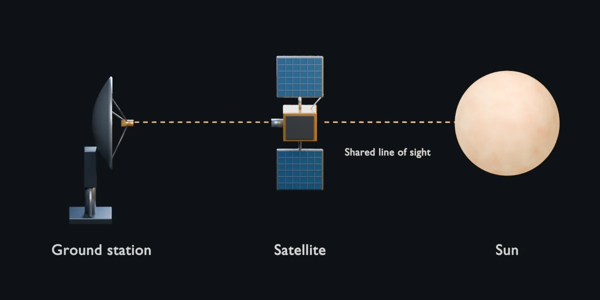
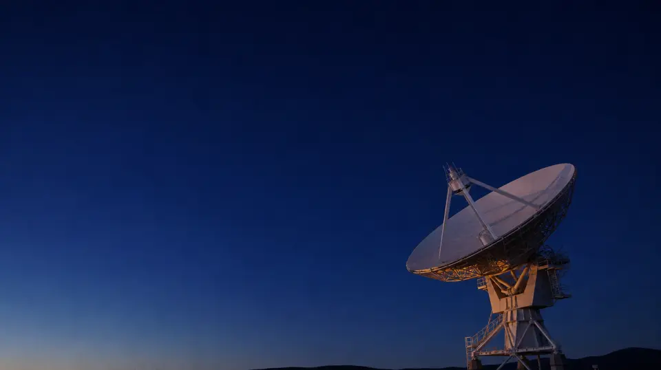

Understand the estimate
When the Sun gets behind the signal
Near each equinox, the Sun can line up behind your satellite as seen from the receiving dish. The extra solar radio noise can reduce signal quality for a few minutes on successive days.

What causes the interference?
Intelsat’s Sun Interference Background states the cause plainly: the Sun passing directly behind a geostationary satellite as seen from a receiving earth station. For several minutes each day during the equinox season (February/March and September/October), the Sun crosses the equatorial plane used by GSO spacecraft. Apparent solar path then puts the solar disk in the earth station’s line of sight. The Sun is an intense thermal-noise source at the same radio frequencies the satellite uses, so antenna noise temperature rises, G/T falls, and C/N (or C/I) degrades. This is often called a sun fade, sun transit, or sun outage.
How does the hemisphere affect timing?
- Northern hemisphere: several days just prior to the March equinox and just after the September equinox.
- Southern hemisphere (Macaé): after the March equinox and before the September equinox.
- Sites west of the satellite see morning windows; sites east see afternoon windows.
- Larger dishes have narrower beams and usually shorter alignment windows. A smaller dish can receive solar noise for longer.
These are seasonal guidelines, not exact dates for your link. Latitude, orbital position, frequency and dish size determine the calculated windows. At the equator, use Auto from latitude.
How is the window calculated?
Intelsat, Hispasat, and Telesat publish web calculators. They do not publish a public JSON API. This page does not log into MyIntelsat or scrape those UIs. It applies the method those owners document, on public orbital positions.
- Hispasat describes an angles-only estimate that excludes RF link margin, antenna mispointing and equipment performance.
- Intelsat derives interference duration from antenna beamwidth, using earth-station size, band and location.
- ITU-R S.1525-1: 3 dB beamwidth θ3dB = 70 λ / D. Optical solar diameter ≈ 0.48°. Hour angle of the Sun ≈ 0.25° per minute. Maximum duration ≈ (θ3dB + 0.48) / 0.25 minutes.
- This checker models alignment when the solar disk (~0.5°) enters the receive 3 dB beam: half beamwidth + 0.25° solar radius. It reports a predicted window, no window, a satellite below the horizon, or an out-of-season result, with UTC timing when a window exists.
Which satellites and orbital data are included?
Hispasat’s own calculator lists 30°W (30W-5, 30W-6), 36°W (36W-1), 55.5°W (55W-2), 61°W (Amazonas 2, 3, 5, Nexus), 70°W (70W-1), and 74°W (74W-1). Telesat’s Telstar 19V (~63°W), 11N (~37.5°W) and 12V (~15°W) are Atlantic/Americas satellites. Intelsat’s Atlantic fleet (IS-14 45°W, IS-21 58°W, IS-34 55.5°W, IS-35e 34.5°W, IS-37e 18°W, and others) is tagged in the full in-view set, not shown as if they were the only satellites that exist.
Orbital longitudes on the belt come from Celestrak GP GROUP=geo OMM JSON
(Earth-fixed longitude = RAAN + argument of perigee + mean anomaly − GMST at epoch).
A dated snapshot is bundled so the page works on file://. Live refresh is
attempted only when the origin is not a local file (Celestrak CORS and their one-download-per-update policy).

Geometry is one part of the link
This calculator estimates alignment, not how much margin your circuit has. Weather is shown for context and does not change the predicted window.
Allow operational margin around the estimate and confirm timing with your operator's current ephemeris calculator. Do not take a circuit down on this estimate alone.
Check the operator sources